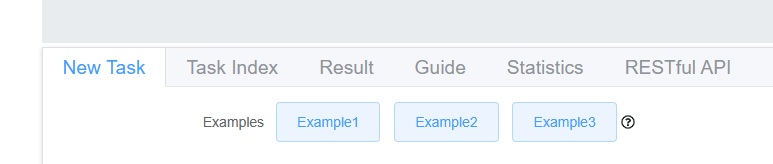
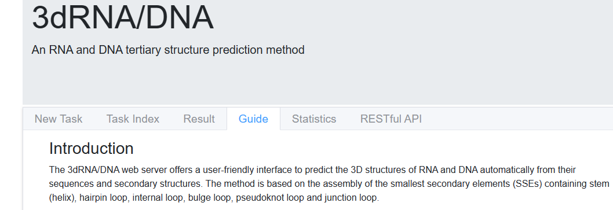
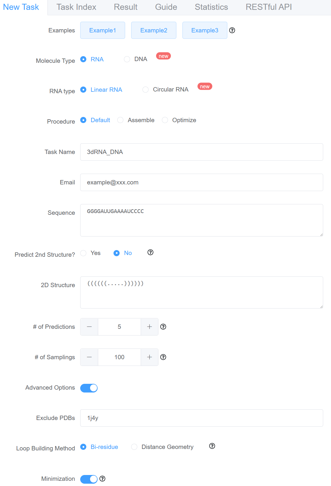
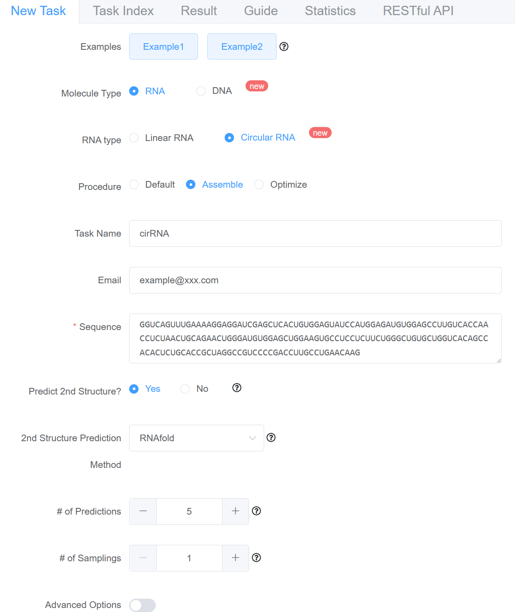
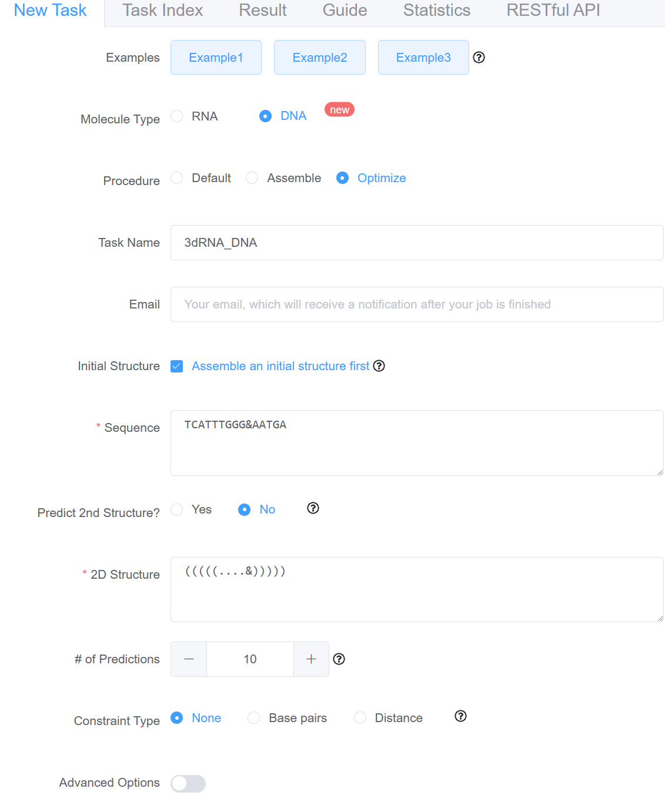

3dRNA/DNA
Click here to visit 3dRNA/DNA web server
You can click "Example" to show example:

You can find using instructions in the Guide page:

You can find tips for each options when click .
Here are some examples.
The parameters are in the table and the options you need to choose are showing in the picture.
Using Default procedure to predict a Linear RNA
Key Value Molecule Type RNA RNA Type Linear RNA Procedure Default Task Name 3dRNA_DNA Email example@xxx.com Sequence GGGGAUUGAAAAUCCCC Predict 2nd Strucure No 2D Structure ((((((.....)))))) Number of Predictions 5 Number of Samplings 100 Exclude PDBs 1j4y Loop Building Method Bi-residue Minimization Yes 
Using Assemble procedure to predict a Circular RNA
Key Value Molecule Type RNA RNA Type Circular RNA Procedure Assemble Task Name cirRNA Email example@xxx.com Sequence GGUCAGUUUGAAAAGGAGGAUCGAGCUCACUGUGGAGUAUCCAUG
GAGAUGUGGAGCCUUGUCACCAACCUCUAACUGCAGAACUGGGAU
GUGGAGCUGGAAGUGCCUCCUCUUCUGGGCUGUGCUGGUCACAGC
CACACUCUGCACCGCUAGGCCGUCCCCGACCUUGCCUGAACAAG
Predict 2nd Strucure Yes 2nd Structure Prediction Method RNAfold Number of Predictions 5 Number of Samplings No sampling Exclude PDBs Null Loop Building Method Bi-residue Minimization Yes 
Using Optimize procedure to predict a DNA
Key Value Molecule Type DNA Procedure Optimize Task Name 3dRNA_DNA Email Null Sequence TCATTTGGG&AATGA Predict 2nd Strucure No 2D Structure (((((....&))))) Number of Predictions 10 Constraint Type None Exclude PDBs Null Loop Building Method Bi-residue Minimization Yes 